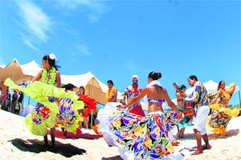
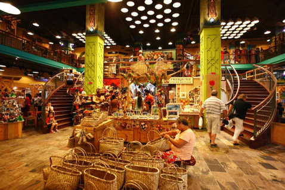
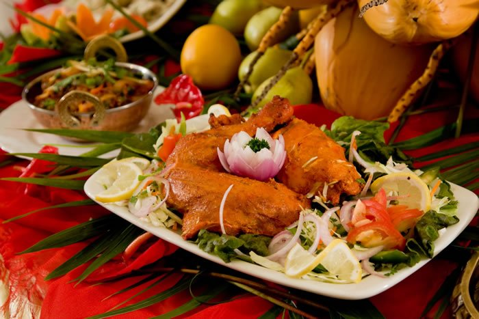

Mauritius is a multicultural island with people from all the continents established here, whose roots reach back in history to India, Madagascar, China, East Africa, England and France. The actual population sizes to over 1.2 million
European, Indian, Chinese and African cultures converge together to make up the colorful, vibrant culture of Mauritius that is replete with some of the most fascinating and years-old customs and traditions. Each aspect of Mauritian culture-its cuisine, religions, festivals, language and literature is a living proof of the myriad Asia, African and Western influences.
Religion
The Mauritian culture's rich diversity is evident in Mauritius' landscape where churches, temples and mosques jostle each other for space. Chinese pagodas and Buddhist temples are also a common sight in Mauritius. The people of Mauritius celebrate various festivals belonging to different religions with equal gusto and fervor such as Mahashivratri, Diwali, Ganesh Chathurti, Eid-Ul-Fitr, Christmas, Easter and Chinese New Year (Spring Festival) among others. The Tamil festival of Cavadee that celebrates Lord Muruga is a penitence ritual that involves spectacular feats like the fire-walking ceremony.
The multi-ethnic characteristics of Mauritius make it a multi-lingual country with ethnic languages such as Hindi, Tamil, Marathi, Urdu, Mandarin and Cantonese being commonly used. But the real lingua franca of the island is Creole. The Creole language emerged as a result of interaction between French settlers and African slaves. The use of the Creole language transcends all ethnic, religious and class barriers. Creole does not have a definite written form, as mostly English or French are the languages of choice for education, media, government, law and business.
Sega
Sega is the music, songs and dances of choice played to tourists as a taste of the local culture. Its origins are said to be that of African. The Sega is based on three basic instruments: the ravanne, the maravanne and the triangle. The dancers wear colorful blouses and skirts with flower motifs and swaying their hips to the rhythmic music. Bhojpuri songs of Indian origin are also quite popular, especially in the interiors.
The Sega is a cry from the soul trying to transcend the miseries and heartaches of life, while at the same time expressing the universal human desire for joy and happiness. It tells the joys and sorrows of the peasants and the fishing folks. Its beats, gripping in intensity, now provide entertainment to Mauritians of all walks of life in towns and villages. Today the Sega and its beat are a part of every Mauritian's life. Here's a popular Sega that will make you sway your hips to the tune.
Handicrafts & Mauritian Cuisine
Like any other country, Mauritius has got loads of craft makers. Craft products here have a taste of the Mauritian culture in them. Items are made of corals or vacant sea shells found on the beaches; baskets and souvenirs are made of the dried Vacoas plants; jewellery cases are made of wood or bamboo; clothes are hand broidered. Everything that the island provides is turned into beautiful items by those people. And they totally love what they are doing and tend to concentrate on every detail to give life to their products. Craft items can be seen fairly all over the island and is a major source of money for many people.

When it comes to food, Mauritian cuisine is an exotic synthesis of myriad continental and oriental influences where Indian-style curries go hand in hand with French gateaux and Creole rougailles. The variety of spices used in Mauritian dishes lend a subtle and a aromatic flavor that goes a long way in making Mauritian cuisine an unique culinary experience.